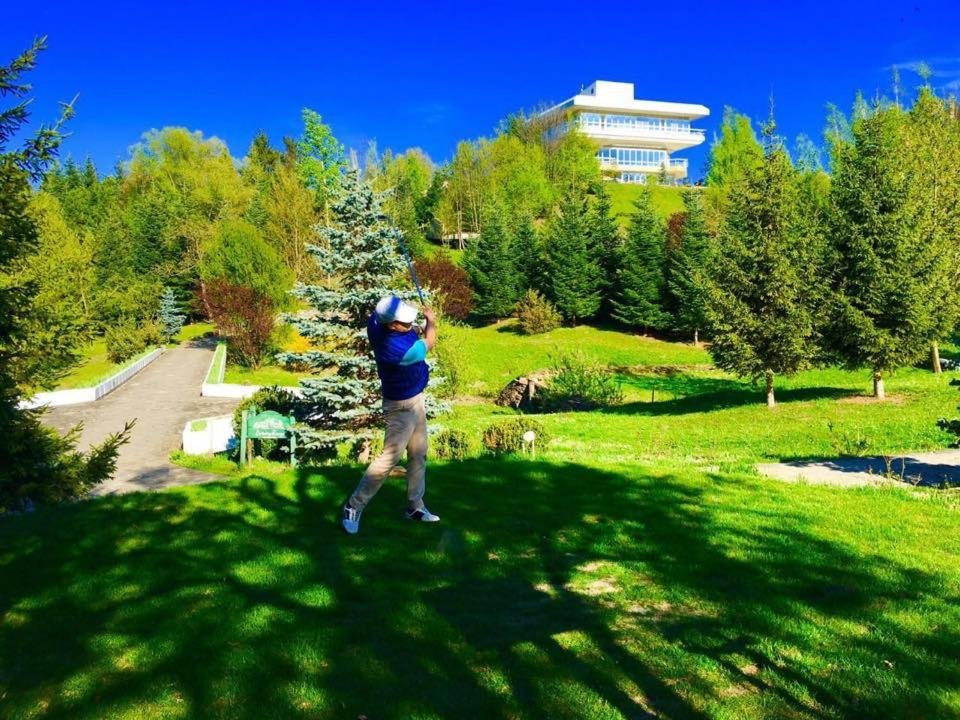

Puțină lume știe că Breaza este una dintre destinațiile de golf din România — un teren pitoresc, în cadru subcarpatic, la câteva minute de vilă.

Breaza are o tradiție discretă, dar reală, în golf: un teren amenajat într-un peisaj de dealuri și verdeață, la doar câteva minute de Casa Rodica. Este alegerea potrivită pentru o dimineață activă, urmată de relaxare la vilă.
Terenul din Breaza se remarcă prin cadrul natural generos — fairway-uri pe relief blând, aer curat de stațiune și priveliști spre dealurile din jur. Este un loc plăcut atât pentru jucătorii experimentați, cât și pentru cei care vor să încerce sportul pentru prima dată.
Fiind la câteva minute de vilă, poți juca o rundă dimineața și te poți întoarce la prânz pentru o masă în foișor sau o baie în piscină.
Golful se împacă bine cu restul zonei: o drumeție ușoară pe dealurile Brezei, o vizită la Mănăstirea Breaza sau o plimbare prin centrul stațiunii pot completa ziua.
Pentru grupuri, o combinație de golf, sport și seri la foișor transformă un simplu weekend într-o mini-vacanță activă.

La întoarcere, vila întreagă te așteaptă cu o piscină cu bar, un teren de sport în curte și un hectar de livadă pentru plimbări liniștite. Este echilibrul perfect între mișcare și odihnă.
Golful nu este rezervat experților. Terenul din Breaza este un loc bun pentru a încerca sportul: poți lua o lecție introductivă, poți închiria echipamentul și te poți bucura de mișcare în aer liber, într-un cadru relaxat.
Pentru grupuri, o dimineață de golf urmată de prânz la vilă este o combinație care place tuturor, chiar și celor care doar privesc.
Dincolo de golf, zona Brezei se pretează la drumeții ușoare și plimbări cu bicicleta. Chiar la vilă ai un teren de sport în curte și o piscină cu bar, așa că ziua activă poate continua fără să pleci nicăieri.

Nu. Terenul este potrivit și pentru începători — poți lua o lecție și poți închiria echipamentul la fața locului.
Din primăvară până toamna târziu, când vremea permite jocul în aer liber.
Terenul de golf din Breaza este la doar câteva minute de Casa Rodica.
Casa Rodica
Piscină cu bar, teren de sport în curte și o livadă de un hectar — vila întreagă vă așteaptă la câțiva pași de teren.
Verifică disponibilitatea